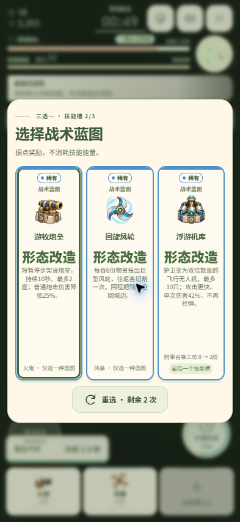
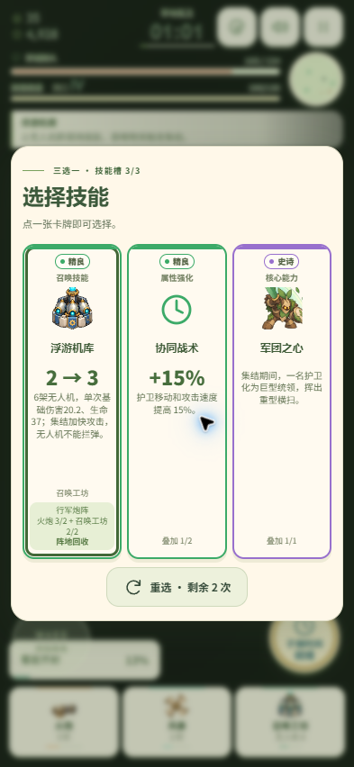
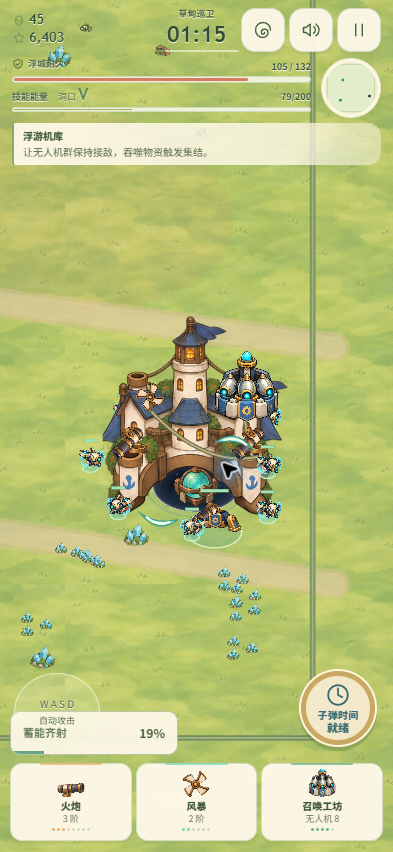
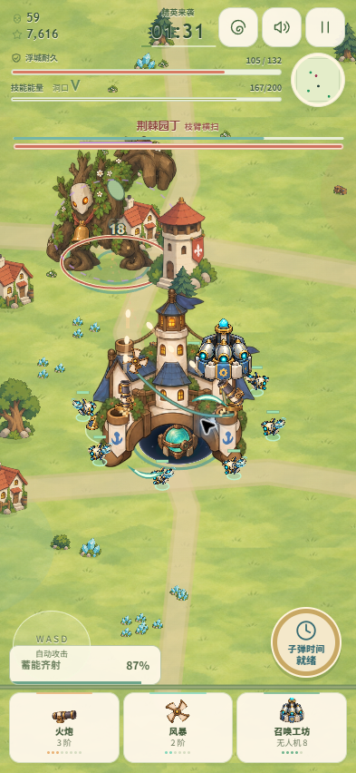
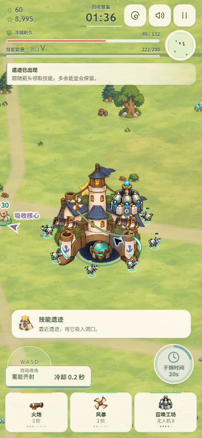

2026-10-16 · 手机网页与离线版 · 原公开链接继续使用
V7把新召唤、花园和装备都包在自然主题下，导致玩家感觉只有植物一套。V8保留草甸敌群，但把玩家机械、雷电、冰霜、火焰、风轮与荆棘分开表现。新增形态改变停走、站位和吞噬用途，不靠更换技能名称制造差异。
共8种蓝图：停步架炮、近程霰弹、回旋风轮、移动蓄雷、连锁棘雷、机械无人机、行走火径、反弹镜壁；同武器形态互斥，带有射程、弹数、伤害或拦弹能力的取舍。新增4个跨武器组合，总数17。
普通第3次选卡在有前置时出现蓝图；据点奖励能补足二阶前置，也能使用空余技能槽带来新形态。蓝图三选一保留普通升级能量。UI显示真实的散弹数量、无人机数量/伤害/生命，图标与城堡挂载同步。



| 观察 | 处理 |
|---|---|
| 第一个候选据点只有普通升级可选 | 免费蓝图可补前置阶级；每张尽量不同技能体系，遵守三技能槽。 |
| 空场吞残骸就把炮垒和集结消耗完 | 储存蓄能，接敌再使用；没有把蓄能变成无限堆叠。 |
| 据点远在角落，跑动时间长 | 在行进方向7–10单位附近挑位置，沿路少量物资。 |
| 霰弹多次击退把目标推离后续散弹 | 同一目标击退有短间隔，保留近程打法的风险。 |
| 第二次重选可能回到第一次蓝图 | 同轮重选记住更早候选，仍有新蓝图时优先给新选择。 |
中间候选：霰弹+召唤+雷电，击败铃翼女王，精英约20秒；召唤物确有阵亡，玩家也受伤。机械候选：火炮3+风暴2+无人机4，第34秒据点出现、第49秒领蓝图、01:36击败园丁。后者首精英仅持续约6秒关卡时间（含子弹时间），暴露出集结与四阶召唤爆发偏强。
不能据此声称平衡已经完成。 下一轮应重点比较不同构筑面对精英的有效输出窗口、召唤生存与控制能力，并完成后半程人工实玩。此次没有简单增加精英血量掩盖问题，也没有宣称已完整手玩Boss。
机械候选日志：60击杀、实际受伤62.2、治疗48、普通血包2个、炮垒7座/36发炮弹、行军炮阵26次命中；图集问题与游戏错误为空。帧率60只是桌面本地单次读数。原始诊断见 实玩诊断。


149项规则测试通过，916个词条的六语校验通过。8种蓝图均有行为规则测试，人工只玩了上述早期路线。最后的重选历史与机库核心卡片修正未重新完整跑局。Chrome正常UI输入、无状态注入或快进；手机393×852视口。未完成实体iPhone测试。
运行时使用15张图集；新增机械/元素图集通过内置image_gen生成，原稿与完整提示词见 素材清单。草稿和正式版分别保留，WebP转换逐字节核对RGBA。网站部署由原Sites项目完成；当前机器被Cloudflare拦截，生产访问没有冒充验证通过。